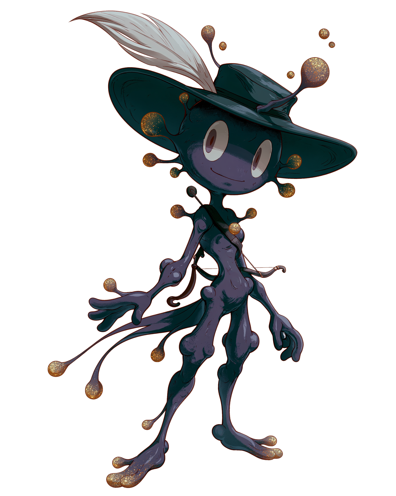

Case /02 · SaaS · Closed Beta
HNTZ
Jede Pflanze ein Datenobjekt. Eine Engine, die Anomalien erkennt, bevor du sie siehst.
Beta live ansehen →
Case /02 · SaaS · Closed Beta
Jede Pflanze ein Datenobjekt. Eine Engine, die Anomalien erkennt, bevor du sie siehst.
Beta live ansehen →
Pflanzen lügen nicht. Tabellen schon. Also wurde jede Pflanze zum Objekt.


Dashboard & Stammbaum. Jede Linie eine Entscheidung über tausende Datenpunkte.
Foto, Messwert, Notiz, Sensor. Alles fließt in dasselbe Datenobjekt pro Pflanze.
Wahrscheinlichkeiten statt Bauchgefühl. Die Engine gewichtet Merkmale über Generationen.
Erkennt Anomalien selbstständig und meldet, was vom Muster abweicht.

Sechs Achsen pro Pflanze. Ein Blick, und der Phänotyp ist lesbar.
Der Radar verdichtet Wuchs, Aroma, Resistenz, Ertrag, Blütezeit und Stabilität zu einer Form, die man vergleichen kann. Discovery wird visuell.
Neu: ein Maskottchen, geboren aus Trichomen.
Es hat schon einen Namen. Verraten wird er erst auf der Cannafair. Bis dahin steht es einfach da und grinst.
Wer Pflanzen züchtet, sammelt über Jahre ein Wissen, das selten den Kopf verlässt. Welche Mutter welche Stärke weitergibt. Wann ein Geruch kippt. Welche Linie unter Stress stabil bleibt. Am Ende steht meist ein selbstgebautes Spreadsheet, das nur einer lesen kann.
HNTZ macht aus jeder Pflanze ein eigenes Datenobjekt, das über sieben Phasen mitwächst. Ein Foto, ein Messwert, eine Notiz, am Abend eine kurze Sprachnachricht. Aus dem Freitext werden Werte, aus den Werten eine Form, die man neben eine andere legen kann. Sechs Achsen, ein Blick, der Phänotyp ist lesbar.
Darüber liegt eine Engine, die Wahrscheinlichkeiten über Generationen gewichtet. Sie verfolgt Merkmale über viele Pflanzen und meldet, was vom Muster abweicht, bevor das Auge es bemerkt.
Gebaut habe ich das allein, vom Datenmodell bis zur Sprachoberfläche, rund zwanzigtausend Zeilen. Fünfzehn Züchter testen die Beta. Die Engine läuft, und sie findet schon Dinge, die vorher im Spreadsheet verschwunden wären.